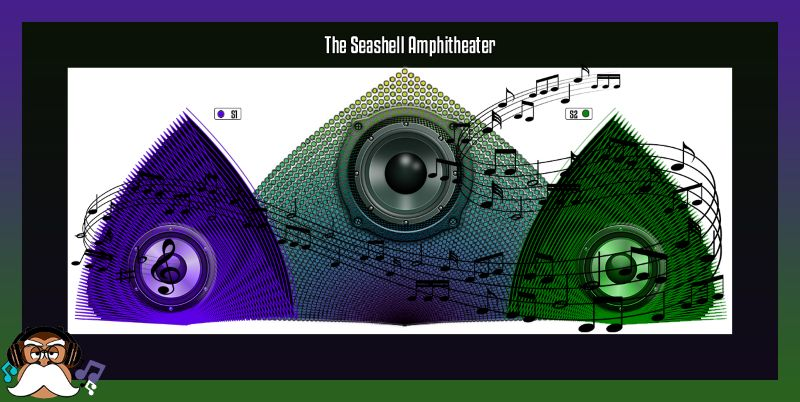

wearing the same but different present 🎁, and this cycle repeats itself.
A gift 🎁, a brain 🧠, a present 🎁!
Our brains are a powerful 🪫computer 💻 and as such, are such a terrible thing to waste 🗑️.
A plumber plunges into chaos, navigating fractals of despair, a Sisyphean struggle breaks out against endless loops, which broke out and 1/3 of the stars have fallen.
Matthew 8:12
'But the children of the kingdom shall be cast out into outer darkness,
where there shall be weeping and gnashing of teeth.'
Are you ready for an abstract, complex spiritual equation of a ride?
What is the divine nature of z_{n+1} = z_n² + c?
The + c is the spark that launches the colors.
The Mandelbrot set stands as one of the most hauntingly beautiful objects in all of mathematics
— a geographic map of iterative stability and explosive chaos.
Begin with z₀ = 0 and iterate.
The black regions are the stable, bounded points — trapped within their boundaries, repeating the same safe orbit forever.
Colorless and lifeless, a prison of endless repetition.
Yet the reversal is striking: when a point escapes the black set,
driven by the tiniest shift in the complex number + c,
it bursts outward into infinite color and ever-branching patterns that mimic the wild beauty and complexity of life itself. Here is where vibrancy, growth, and eternity explode.
This is the divine paradox within z_{n+1} = z_n² + c:
What appears as perfect stability can become a form of Hell — confined, unchanging, without light or growth.
What appears as chaos and rebellion against the boundary becomes the place of color, wonder, and living eternity.
And yet the opposite also holds: true freedom is not lawlessness, but finding one’s boundary in the
CREATOR HIMSELF
Chaos Theory: A tiny change can produce drastic, far-reaching consequences.
Yet when we mix in the complex number + c, even the smallest shift acts as a spark.
Suddenly the butterfly effect takes hold.
When we venture off from being stable, traveling away from our comfort zone, we have more opportunity to grow. When we grow, we view the light more clearly, thus our ability to grow, grows abundantly.
Tɦɛ Ռɛա Ɖǟʏ begins at sundown, when it is hardest to see, so too is that with our faith.
At the beginning of our journey, we don't see as clearly as when our faith as a chance to blossom, mature and sprout. However, as the new day progresses, so too does our ability to see.
Now resides a duality — light and darkness, obedience and rebellion, night and day.
To receive color, the numbers must break free into the butterfly effect and branch off into infinity.
But those confined by the prison of sin remain trapped in endless recursive loops — just as those who sin are slaves to sin.
Our tongues are like the rudder of ships, that steer us through the Butterfly Effect,
where whispers can unleash fiery hurricanes of destruction. Our souls are a perpetual force of energy, wrapped by a metaphoric forcefield cocoon, contained within a state of consciousness.
--- Age 🙈🙉🙊 timeline ---
--- Time🕐timeline ---
Color is light, and the LIGHT of the world is
YESHUA!
I do not want anyone to enter the kingdom of hell, unless it is for a few moments in time,
just so they will comprehend what suffering is, and then for them to repent and embrace my LORD!
🙈🙉🙊 🏡🏡 🏡🏡🙈🙉🙊
